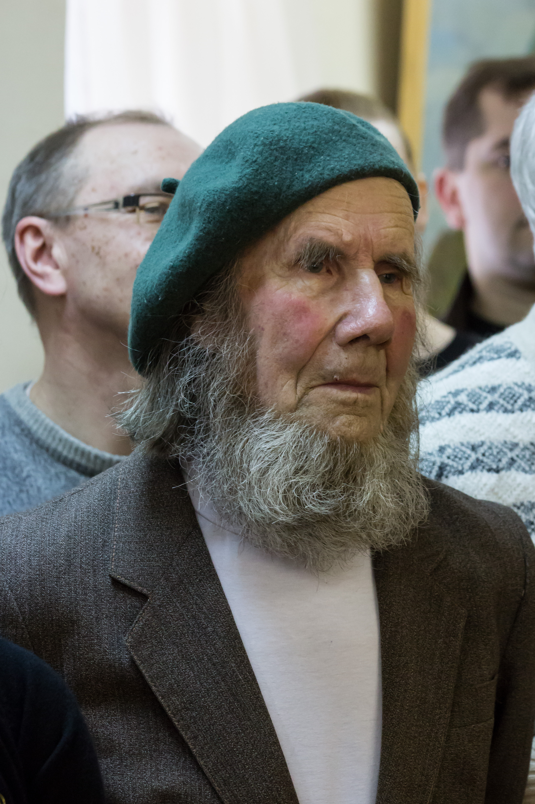

Н. И. Дроздов

Н. И. Дроздов
Н.И. Дроздов (1930 – 2015 гг.) родился в городе Середа (ныне г. Фурманов). Учился в школе № 4, где преподавал художник Трубников Д.А. В конце 50-х начале 60-х гг. Н.И. Дроздов стоял у истоков создания первого в городе музея, получившего в последствие имя Д.А. Фурманова, разрабатывал художественное решение экспозиции. Дроздов Н.И. открывает первую в городе изостудию для детей, которая стала прообразом детской художественной школы. В 1961г. он был участником Всесоюзной художественной выставки. В 2011 г. и в 2013 гг. состоялись его персональные выставки в музее Д.А. Фурманова.